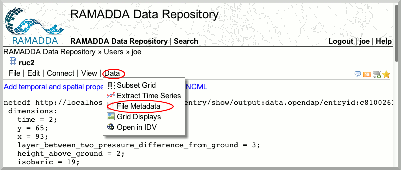
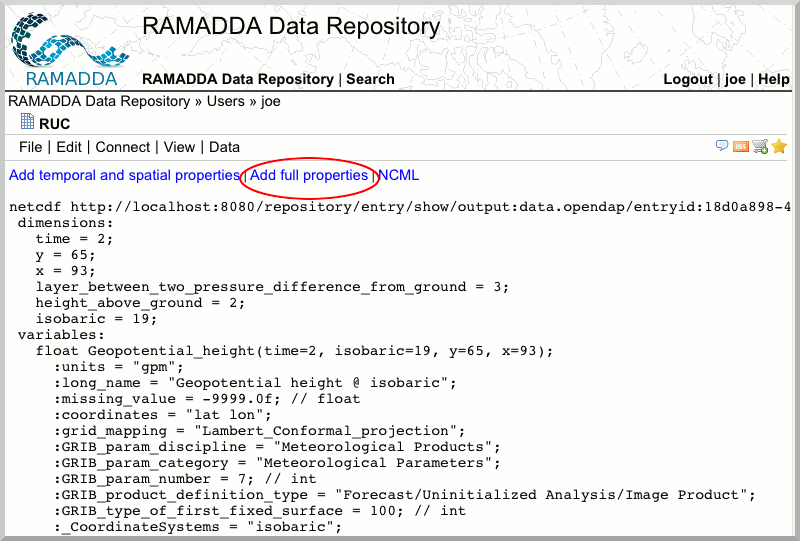
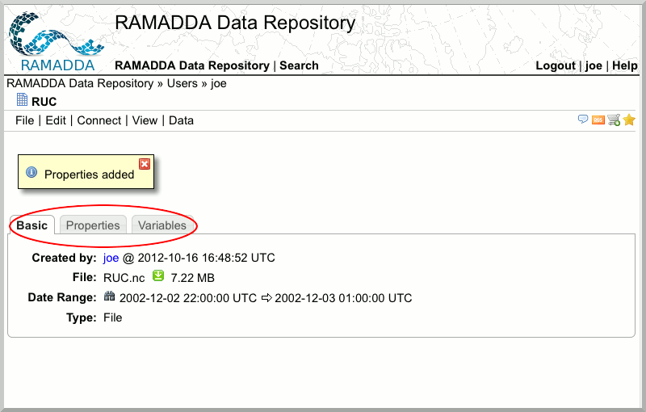
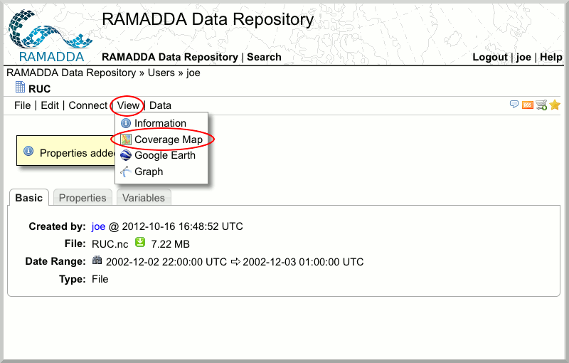
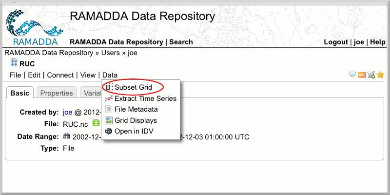
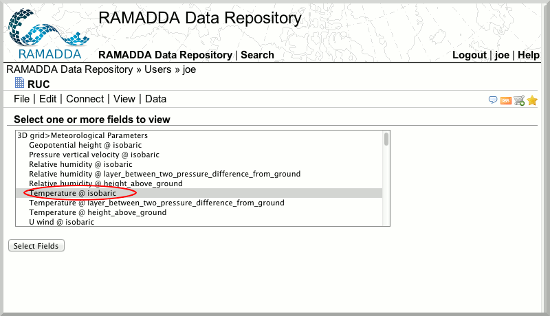
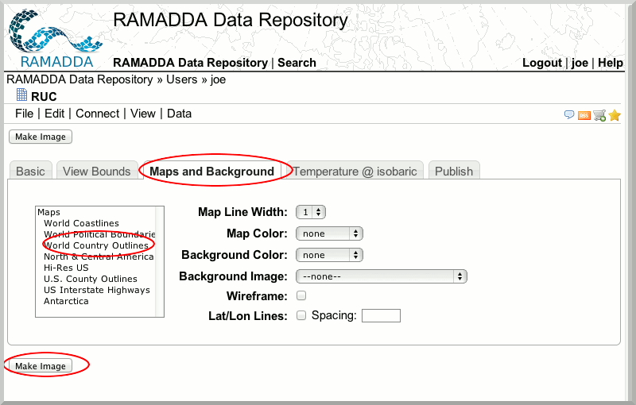

Working with Gridded Data
In this section, we will be expanding on what you can do with the RUC.nc file you downloaded earlier.
- Go to your "Users" folder where you downloaded the
RUC.nc file.
- You can examine the netCDF metadata by going to [ht::menu Data {File Metadata}]

- You can add metadata properties by clicking on "Add full properties"

- Navigate through the "Basic", "Properties", and "Variables" tabs.

- You can examine the geographic extents of this netCDF metadata by going to [ht::menu View {Coverage Map}])

- You can subset the netCDF file [ht::menu Data {Subset Spatially}]). You will be presented with many subsetting options. Note you can republish the subsetted data to RAMADDA.

Visualization
- You can visualize the netCDF metadata by going to [ht::menu Data {Grid Displays}])
- Select the field you would like to display.

- Add additional information to your image such as "World Country Outlines".
